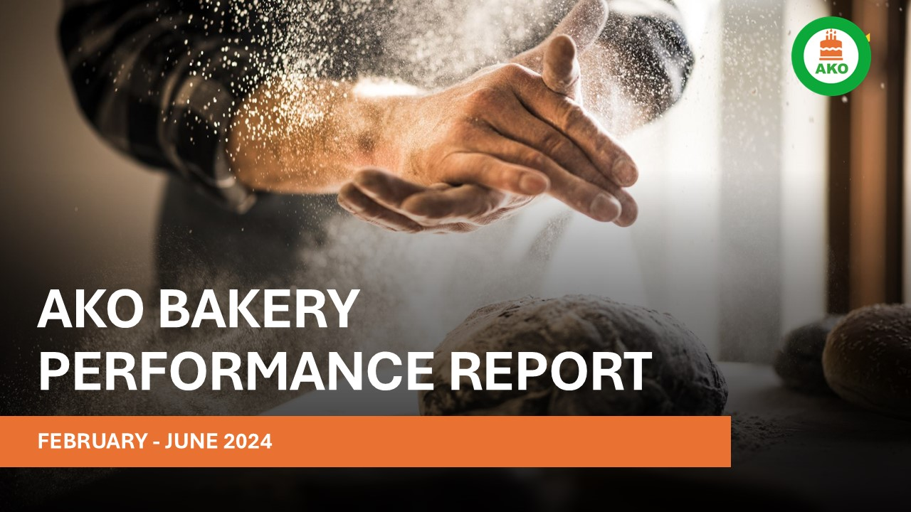
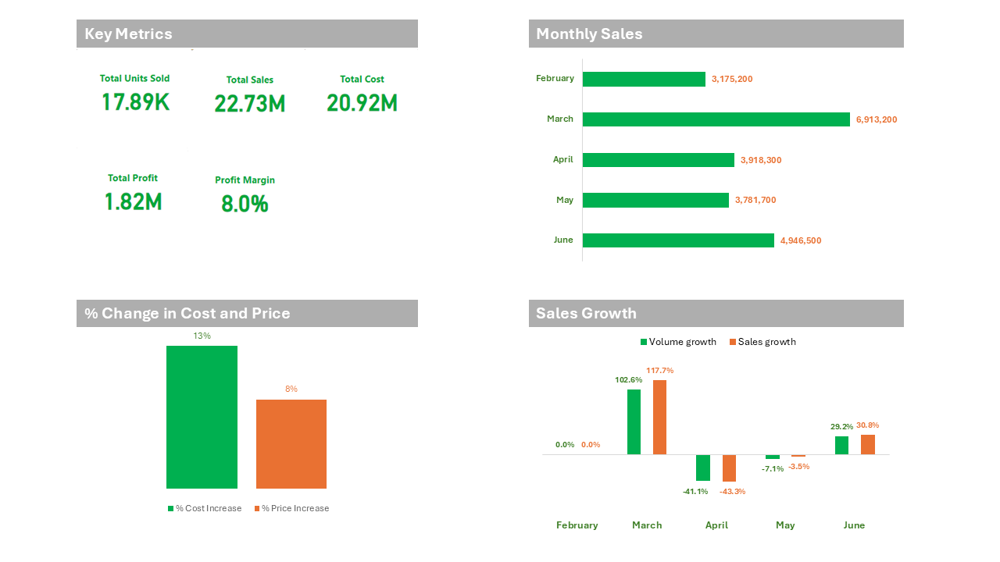

Project Overview / Introduction
This project analyzes AKO Bakery’s performance between February and June 2024 using Microsoft Excel. The goal was to understand monthly sales trends, identify top-performing sales channels, measure profit fluctuations, and forecast how price adjustments (₦1,500 and ₦1,800) could impact revenue and profitability.
Business Background
AKO Bakery is a growing bakery that produces and distributes bread through three main channels — retailers, AREPO wholesalers, and walk-in customers. Between February and June 2024, the bakery experienced fluctuating performance across sales, cost, and profitability. Leadership needed a data-driven analysis to identify which channels drive sales, where losses occur, and how pricing adjustments could improve profits.
Business Objectives
- Analyze sales performance and its impact on overall profitability.
- Identify the sales channels generating the highest revenue.
- Forecast potential revenue and profit if prices are increased to ₦1,500 and ₦1,800.
- Provide actionable recommendations to enhance sales and efficiency.
Dataset & Data Dictionary
The dataset covers sales records from February to June 2024. Each entry includes monthly sales, cost, selling price, profit margin, and performance across different sales channels.
- Sales Channel: AREPO, Retailers, and Walk-in customers.
- Profit Margin: Portion of sales revenue retained as profit after costs.
- Sales Growth: Percentage increase in sales compared to the previous month.
- SP (Selling Price): Price per bread loaf for the month.
- Number of Orders: Total customer orders per month.
Performance Highlights (February - June 2024)
📊 The monthly analysis below highlights key patterns in volume, sales, and profit.
- February: Lowest sales and volume but second most profitable month due to low production cost.
- March: Most profitable month after increasing price to ₦1,300; bulk order significantly boosted profit.
- April: Sharp decline in all metrics; 48% of sales made below cost of ₦1,234, resulting in losses.
- May: Revenue dropped slightly due to the economic downturn, but profit improved.
- June: Recovered with an increase in all metrics, ranking second in total revenue and profit.
Sales Channel Performance
Retailers were the key driver of growth, contributing 69% of total sales with a 41% average growth rate. AREPO contributed 24% but showed a consistent month-on-month decline (-2% average). Walk-in customers represented the smallest share (7%) but displayed a healthy 31% average growth.

Predictive Analysis
Predictive models were created for three pricing scenarios using ₦1,500 and ₦1,800 as new price points:
- Neutral Case: All other factors remain constant; moderate profit increase.
- Optimistic Case: Price increase with stable customer demand; highest projected profit.
- Pessimistic Case: Slight decline in volume due to price sensitivity but profit still improved.
Based on analysis, setting the retail price at ₦1,500 and offering retailers a ₦1,450 discount per loaf would maximize profit without losing market share.

Recommendations
- Expand Retail Network: Increase number of retailer distributors to drive higher sales.
- Retailer Discounts: Offer bulk-buy discounts (e.g., ₦1,450 per loaf at ₦1,500 RRP).
- Customer Surveys: Collect customer feedback regularly to track satisfaction and brand loyalty.
- Strategic Partnerships: Partner with cafés, hotels, and restaurants for consistent bulk orders.
- Delivery Platforms: Collaborate with on-demand apps like Chowdeck and Glovo to reach digital customers.
Outcome
This Excel analysis provided AVO Bakery with clear insights into sales trends, profitability patterns, and performance drivers. It enabled data-backed decisions on pricing, retail partnerships, and cost management, resulting in improved operational and financial efficiency.